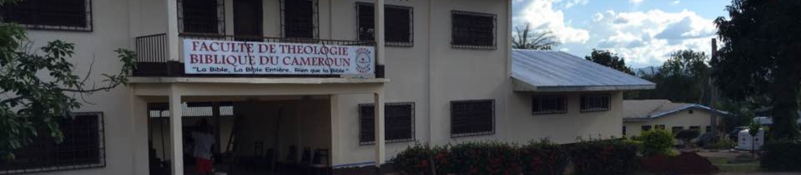

« Ajouter ici le témoignage d'un ancien étudiant ou d'un diplômé de la FATBICAM sur son parcours et sa préparation au ministère. »Nom de l'étudiant, promotion

LE CAMPUS
Étudier la théologie à la FATBICAM, c'est bien plus qu'un cursus académique. C'est choisir une communauté. Sur notre campus de Yaoundé, vous vivez, priez, débattez et grandissez aux côtés de vos professeurs et de vos pairs.
Nous ne formons pas seulement des théologiens : nous accompagnons des hommes et des femmes appelés à servir les Églises en Afrique et dans le monde.
Découvrir la FATBICAMQue vous ayez un projet précis ou encore des questions, notre équipe est là pour vous accompagner dans le choix de votre formation et dans les démarches d'inscription.